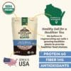
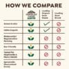
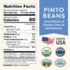

Organic Pinto Beans
By Doudlah Farms
Click Here to Buy →Health & Certification Facts
- USDA Certified Organic — certified by MOSA, one of the most respected organic certifiers in the US
- Tested Clean certified — independently tested free from over 220 chemicals including glyphosate and AMPA
- Continuous testing at 10-100x greater sensitivity than most US labs
- Regenerative and biodynamic farming — actively rebuilds soil health
- Non-GMO verified
- No artificial flavors, colors, or preservatives — single ingredient
- 6th generation family farm in Evansville, Wisconsin
- Grown in USDA and MOSA certified organic soils